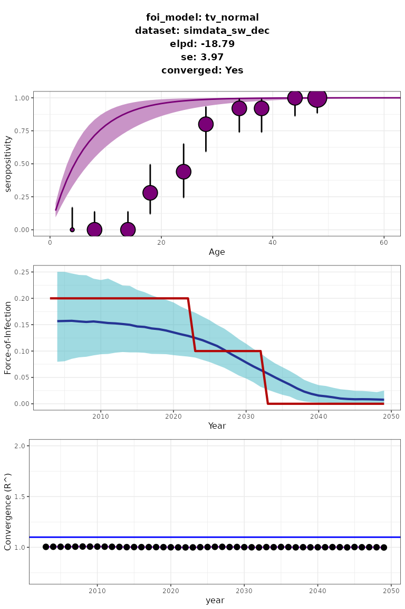
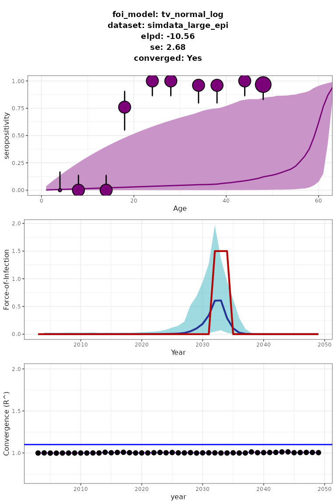
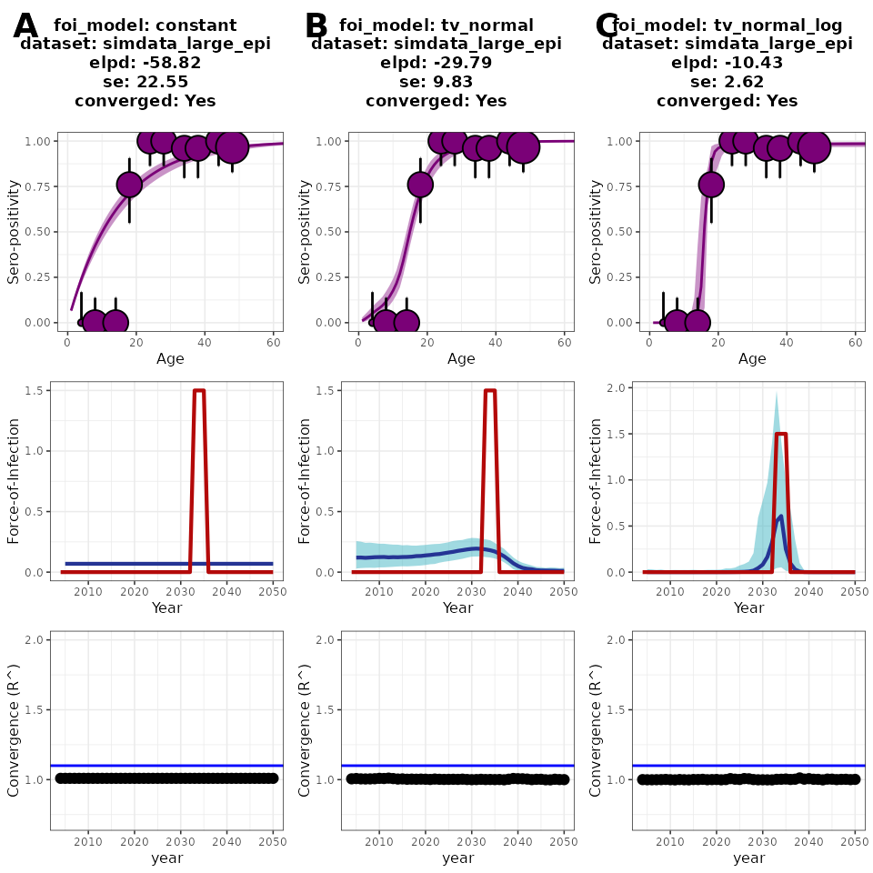

The current version of serofoi supports three different models for estimating the Force-of-Infection (FoI), including constant and time-varying trajectories. For fitting the model to the seroprevalence data we use a suit of bayesian models that include prior and upper prior distributions
What is the Force-of-Infection
The force of infection, also known as the hazard rate or the infection pressure, is a key concept in mathematical modelling of infectious diseases. It represents the rate at which susceptible individuals become infected, given their exposure to a pathogen. In simple terms, the force of infection quantifies the risk of a susceptible individual becoming infected over a period of time. It is usually expressed as a rate per unit of time (e.g., per day or per year).
Constant vs Time-varying FoI
The FoI is one of the most important parameters in epidemiology, but it is often incorrectly assumed to be constant over time. Identifying whether the FoI follows a constant or a time-varying trend can be important in the identification and characterization of the spread of disease. In Table 1 there is a summary of the models currently supported by serofoi.
| Model Option | Description and usage |
|---|---|
constant |
Constant FoI |
tv_normal |
Time-varying normal FoI: slow change in FoI |
tv_normal_log |
Time-varying normal-log FoI: fast epidemic change in FoI |
Table 1. Model options and descriptions.
Model 1. Constant Force-of-Infection (endemic model)
The endemic constant model is a simple mathematical model used in epidemiology to describe the seroprevalence of an infectious disease within a population, as a product of a long-term transmission.
For a constant FoI endemic model, the rate of infection acquisition
\(\lambda\) is constant over time for
each trajectory, and the seroprevalence \(P\) behaves as a cumulative process
increasing monotonically with age. For the seroprevalence at age \(a\) and time \(t\), we have: \[
P(a,t) = 1-\exp\left(-\lambda a\right)
\] The number of positive cases follows a binomial distribution,
where \(n\) is the number of trials
(size of the age group) and \(P\) is
the probability of successes (seroprevalence) for a certain age group:
\[
p(a,t) \sim binom(n(a,t), P(a,t))
\] In serofoi, for the constant model,
the FoI (\(\lambda\)) is
modelled within a Bayesian framework using a uniform prior distribution
\(\sim U(0,2)\). Future versions of the
package may allow to choose different default distributions. This model
can be implemented for the previously prepared dataset
data_test by means of the fit_seromodel
function specifying fit_seromodel="constant".
The object simdata_constant contains a minimal simulated
dataset that emulates an hypothetical endemic situation where the
FoI is constant with value 0.2 and includes data for 250
samples of individuals between 2 and 47 years old with a number of
trials \(n=5\). The following code
shows how to implement the constant model to this simulated
serosurvey:
data("simdata_constant")
serodata_constant <- prepare_serodata(simdata_constant)
model_1 <- fit_seromodel(
serodata = serodata_constant,
foi_model = "constant",
iter = 800
)
plot_seromodel(
model_1,
serodata = serodata_constant,
size_text = 6
) Figure 1. Constant serofoi model plot. Simulated (red) vs modelled
(blue) FoI.
Figure 1. Constant serofoi model plot. Simulated (red) vs modelled
(blue) FoI.
In this case, 800 iterations are enough to ensure convergence. The
plot_seromodel method provides a visualisation of the
results, including a summary where the expected log pointwise predictive
density (elpd) and its standard error (se) are
shown. We say that a model converges if all the R-hat estimates are
below 1.1.
Time-varying FoI models
For the time-varying FoI models, the probability for a case to be positive at age a at time \(t\) also follows a binomial distribution, as described above. However, the seroprevalence is obtained from a cumulative of the yearly-varying values of the FoI over time: \[ P(a,t) = 1 - \exp\left(-\sum_{i=t-a+1}^{t}\lambda_i\right) \] The corresponding serosurvey completed at time \(t_{sur}\) is informative for the interval \([t_{sur}-a_{max}, t_{sur}]\).
Model 2. Time-varying FoI - Slow Time-Varying FoI
The time-varying slow normal model relies on the following
prior distributions for the FoI to describe the spread of a
given infectious disease within a population over time: \[
\lambda(t)\sim normal(\lambda(t-1), \sigma) \\
\lambda(t=1) \sim normal(0, 1)
\] The object simdata_sw_dec contains a minimal
simulated dataset that emulates a situation where the FoI
follows a stepwise decreasing tendency (FoI panel in Fig. 2).
The simulated dataset contains information about 250 samples of
individuals between 2 and 47 years old with a number of trials \(n=5\). The following code shows how to
implement the slow time-varying normal model to this simulated
serosurvey:
data("simdata_sw_dec")
serodata_sw_dec <- prepare_serodata(simdata_sw_dec)
model_2 <- fit_seromodel(
serodata = serodata_sw_dec,
foi_model = "tv_normal",
iter = 1500
)
plot_seromodel(model_2,
serodata = serodata_sw_dec,
size_text = 6
) Figure 2. Slow time-varying serofoi model plot. Simulated (red) vs modelled (blue) FoI.
The number of iterations required may depend on the number of years, reflected by the difference between the year of the serosurvey and the maximum age-class sampled.
Model 3. Time-varying FoI - Fast Epidemic Model
The time-varying fast epidemic model, relies on normal prior distributions for the FoI in the logarithmic scale, i.e: \[ \lambda(t)\sim normal(\log(\lambda(t-1)), \sigma) \\ \lambda(t=1) \sim normal(-6, 4) \] This is done in order to capture fast changes in the FoI trend. Importantly, the standard deviation parameter of this normal distribution of the FoI \(\lambda(t)\) is set using an upper prior that follows a Cauchy distribution.
In order to test this model we use the minimal simulated dataset
contained in the simdata_large_epi object. This dataset
emulates a hypothetical situation where a three-year epidemic occurs
between 2032 and 2035. The simulated serosurvey tests 250 individuals
from 0 to 50 years of age in the year 2050. The implementation of the
fast epidemic model can be obtained running the following lines of
code:
data("simdata_large_epi")
serodata_large_epi <- prepare_serodata(simdata_large_epi)
model_3 <- fit_seromodel(
serodata = serodata_large_epi,
foi_model = "tv_normal_log",
iter = 1500
)
model_3_plot <- plot_seromodel(model_3,
serodata = serodata_large_epi,
size_text = 6
)
plot(model_3_plot) Figure 3. Time-varying fast epidemic serofoi model plot. Simulated (red) vs modelled (blue) FoI.
In Fig 3 we can see that the fast epidemic serofoi model is
able to identify the large epidemic simulated on the
simdata_large_epi dataset.
Models Comparison
The statistical details of the three models are described in Table 2.
| Model Option | Probability of positive case at age \(a\) | Prior distribution | Upper priors |
|---|---|---|---|
constant |
\(\sim binom(n(a,t), P(a,t))\) | \(\lambda\sim uniform(0,2)\) | |
tv_normal |
\(\sim binom(n(a,t), P(a,t))\) | \(\lambda\sim normal(\lambda(t-1),\sigma)\\ \lambda(t=1)\sim normal(0,1)\) | \(\sigma\sim Cauchy(0,1)\) |
tv_normal_log |
\(\sim binom(n(a,t), P(a,t))\) | \(\lambda\sim normal(log(\lambda(t-1)),\sigma)\\ \lambda(t=1)\sim normal(-6,4)\) | \(\sigma\sim Cauchy(0,1)\) |
Table 2. Statistical characteristics of serofoi’s currently supported models for the FoI (\(\lambda\)). Here \(n\) is the size of an age group \(a\) at time-step \(t\) and \(P\) is its corresponding seroprevalence.
Above we showed that the fast epidemic model
(tv_normal_log) is able to identify the large epidemic
outbreak described by the simdata_large_epi dataset, which
was simulated according to a step-wise decreasing FoI (red line
in Fig 3).
Now, we would like to know whether this model actually fits this
dataset better than the other available models in
serofoi. For this, we also implement both the
endemic model (constant) and the slow time-varying normal
model (tv_normal):
Using the function cowplot::plot_grid we can visualise
the results of the three models simultaneously:
cowplot::plot_grid(model_1_plot, model_2_plot, model_3_plot,
nrow = 1, ncol = 3, labels = "AUTO"
) Figure 4. Model comparison between the three serofoi models for a large-epidemic simulated dataset.
A common criterion to decide what model fits the data the best is to
choose the one with the larger elpd. According to this
criterion, in this case the best model is the fast epidemic model, which
is the only one that manages to identify the large epidemic (see the
second row of panel C in Figure 4).
NOTE: Running the serofoi models for the first time on your local computer may take a few minutes for the rstan code to compile locally. However, once the initial compilation is complete, there is no further need for local compilation.